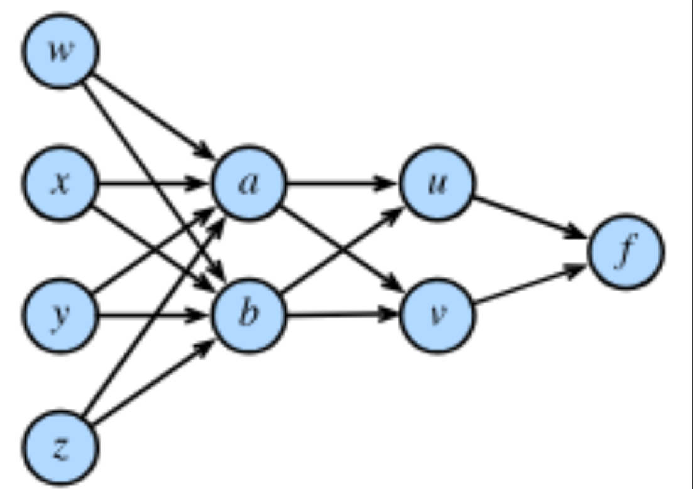
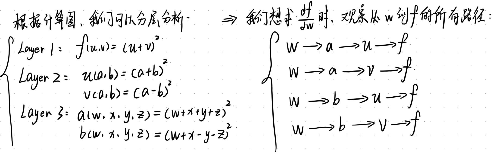
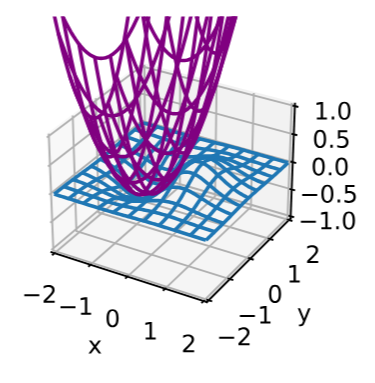

多元微积分(2)
多变量链式法则
此部分我们主要是介绍一下，在神经网络中，梯度是如何计算。这非常重要，对于我们理解数值稳定性问题很有帮助。
我们先来观察一个简单的计算图过程：

一个变量对最终输出的影响，需要把所有路径的贡献加起来。
因此： \frac{\partial f}{\partial w} = \frac{\partial f}{\partial u}\frac{\partial u}{\partial a}\frac{\partial a}{\partial w} + \frac{\partial f}{\partial v}\frac{\partial v}{\partial a}\frac{\partial a}{\partial w} + \frac{\partial f}{\partial u}\frac{\partial u}{\partial b}\frac{\partial b}{\partial w} + \frac{\partial f}{\partial v}\frac{\partial v}{\partial b}\frac{\partial b}{\partial w}
这正是多变量链式法则的路径版本。对于更一般的计算图，若变量 y 通过多条路径影响 f，则：
\frac{\partial f}{\partial y} = \sum_{\text{路径 } p: y \to f} \frac{\partial f}{\partial p}
反向传播算法
继续上一节的例子，我们可以显式计算各局部偏导数：
\frac{\partial f}{\partial u} = 2(u+v), \quad \frac{\partial f}{\partial v} = 2(u+v)
\frac{\partial u}{\partial a} = 2(a+b), \quad \frac{\partial u}{\partial b} = 2(a+b)
\frac{\partial v}{\partial a} = 2(a-b), \quad \frac{\partial v}{\partial b} = -2(a-b)
\frac{\partial a}{\partial w} = 2(w+x+y+z), \quad \frac{\partial b}{\partial w} = 2(w+x-y-z)
将这些值代入链式法则，即可求得 \frac{\partial f}{\partial w}。
在神经网络中也是如此：我们不需要将复合函数完全展开，而是逐层计算自己的梯度，再乘起来。这种方法称为自动微分（Automatic Differentiation）。
为什么要”反向”？
如果简单地从输入层到输出层逐层计算梯度并展开，效率极低。因此引入了反向传播（Backpropagation）：梯度计算不从输入算到输出，而是从输出算到输入。
因为正向的时候，每计算一个参数，就要重新算一遍，有大量的中间量被重复计算，而反向传播只做了一次遍历，把中间结果是存下来复用的。故反向传播在参数较多的情况下非常适用。
最终目的只有一个：计算损失 L 对每个权重 \mathbf{w} 的梯度 \frac{\partial L}{\partial \mathbf{w}}。
所以我们可以再优化一下我们的训练流程：
- 前向传播(Forward propagation): 输入x\rightarrow 计算输出y
- 计算损失(Loss): 比较预测值y_hat与真实值y_true,得到L
- 反向传播(Backward Propagation): 计算梯度\frac{\partial L}{\partial w}
- 参数更新(Parameter Update):使用梯度下降法来更新\pmb{w}\leftarrow\pmb{w}-\eta\frac{\partial L}{\partial w}
- 重复步骤1到4即可.
Hessian矩阵与二阶方法
我们在前面部分已经初步探讨了Hessian矩阵,这个地方我们会更详细一些.
梯度只包含一阶信息。为了描述损失函数在某点附近的弯曲程度（曲率），我们需要二阶偏导数，它们组织成 Hessian 矩阵：
\mathbf{H}_f = \nabla^2 f = \begin{bmatrix} \frac{\partial^2 f}{\partial x_1^2} & \cdots & \frac{\partial^2 f}{\partial x_1 \partial x_n} \\ \vdots & \ddots & \vdots \\ \frac{\partial^2 f}{\partial x_n \partial x_1} & \cdots & \frac{\partial^2 f}{\partial x_n^2} \end{bmatrix}
根据 Clairaut 定理（施瓦茨定理），若二阶偏导连续，则求导顺序可交换：
\frac{\partial^2 f}{\partial x_i \partial x_j} = \frac{\partial^2 f}{\partial x_j \partial x_i}
因此 Hessian 矩阵是对称矩阵：\mathbf{H}^\top = \mathbf{H}。
利用 Hessian 矩阵，函数在原点附近的二阶近似为：
f(\mathbf{x}) \approx f(\mathbf{0}) + \nabla f(\mathbf{0})^\top \mathbf{x} + \frac{1}{2}\mathbf{x}^\top \mathbf{H}(\mathbf{0})\mathbf{x}
这意味着：在局部，任何复杂函数都可以用一个抛物面来近似。如下图:
Hessian 矩阵可用于自适应地调整学习率：
- 曲率大（\mathbf{H} 的特征值大）的地方，函数变化剧烈，应使用较小的学习率；
- 曲率小（\mathbf{H} 的特征值小）的地方，可以使用较大的学习率。
由此导出的牛顿法更新公式为：
\mathbf{x}_{\text{new}} = \mathbf{x} - \mathbf{H}^{-1} \nabla f
对比梯度下降法：
\mathbf{x}_{\text{new}} = \mathbf{x} - \eta \nabla f
虽然牛顿法利用了曲率信息，理论上收敛更快，但在深度学习中极少直接使用，原因在于：
- 参数维度巨大，Hessian 矩阵的存储和求逆计算量不可接受；
- 深度学习中的损失函数高度非凸，Hessian 可能不正定。
此处加一个正定矩阵的定义:正定矩阵是指对任意非零向量x，满足x^T A x > 0的实对称矩阵或Hermite矩阵。即特征值全部为正.
Hessian 不正定 = 局部不是”碗”而是”马鞍”或”倒碗”。牛顿法依赖”碗”的形状来计算最优步长，一旦形状不对，它就可能把你带向山顶或悬崖。
注：现代深度学习中的二阶方法（如 L-BFGS、自然梯度等）都是对完整 Hessian 的近似，而非直接计算。
矩阵微积分：深度学习的核心语言
矩阵运算在深度学习中占据核心地位。将标量微积分推广到向量和矩阵，是高效计算网络梯度的关键。
在矩阵微积分中，求导结果的布局有两种约定：分子布局（Numerator Layout）和分母布局（Denominator Layout）。在深度学习文献中，通常采用分母布局（也称为 Hessian 约定），其规则是：
若标量 f 对列向量 \mathbf{x} 求导，结果是与 \mathbf{x} 同维度的列向量。
\frac{\partial f}{\partial \mathbf{x}} = \begin{bmatrix} \frac{\partial f}{\partial x_1} \\ \frac{\partial f}{\partial x_2} \\ \vdots \\ \frac{\partial f}{\partial x_n} \end{bmatrix}
我们下面对一些经典案例进行一些分析:
- 线性型
设列向量 \boldsymbol{\beta}, \mathbf{x} \in \mathbb{R}^n，函数 f(\mathbf{x}) = \boldsymbol{\beta}^\top \mathbf{x} 是一个标量（点积）。
逐分量求导： \frac{\partial f}{\partial x_i} = \beta_i
因此： \frac{\partial}{\partial \mathbf{x}} (\boldsymbol{\beta}^\top \mathbf{x})=\frac{\partial}{\partial \mathbf{x}} (\mathbf{x}^T \boldsymbol{\beta})= \boldsymbol{\beta}
这是一个极其常用的基础公式。
- 二次型
设 \mathbf{x} \in \mathbb{R}^n，方阵 \mathbf{A} \in \mathbb{R}^{n \times n}，考虑二次型： y = \mathbf{x}^\top \mathbf{A} \mathbf{x} = \sum_{i=1}^n \sum_{j=1}^n A_{ij} x_i x_j
利用 Einstein 求和约定或逐分量求导，对 x_k 求偏导： \frac{\partial y}{\partial x_k} = \sum_j A_{kj} x_j + \sum_i A_{ik} x_i
写成向量形式： \frac{\partial}{\partial \mathbf{x}} (\mathbf{x}^\top \mathbf{A} \mathbf{x}) = (\mathbf{A} + \mathbf{A}^\top)\mathbf{x}
特别地，若 \mathbf{A} 为对称矩阵（\mathbf{A}^\top = \mathbf{A}），则： \frac{\partial}{\partial \mathbf{x}} (\mathbf{x}^\top \mathbf{A} \mathbf{x}) = 2\mathbf{A}\mathbf{x}
- 矩阵分解中的梯度
设 \mathbf{X} \in \mathbb{R}^{n \times m}，\mathbf{U} \in \mathbb{R}^{n \times r}，\mathbf{V} \in \mathbb{R}^{r \times m}，考虑 Frobenius 范数损失： L = \|\mathbf{X} - \mathbf{U}\mathbf{V}\|_F^2
直觉推导：先考虑一维情形，设均为标量 x, u, v，则 \frac{d}{dv}(x - uv)^2 = 2(x - uv) \cdot (-u)
推广到矩阵情形，结果应与 \mathbf{V} 同维（r \times m）。通过维度分析：
- \mathbf{X} - \mathbf{U}\mathbf{V} 是 n \times m
- \mathbf{U}^\top 是 r \times n
- 因此 \mathbf{U}^\top(\mathbf{X} - \mathbf{U}\mathbf{V}) 是 r \times m，与 \mathbf{V} 匹配
故： \frac{\partial L}{\partial \mathbf{V}} = -2\mathbf{U}^\top (\mathbf{X} - \mathbf{U}\mathbf{V})
维度一致性检查是矩阵求导中最可靠的”验算”手段。
如在标准线性层中，设 \mathbf{Y} = \mathbf{W}\mathbf{X}，损失为 L(\mathbf{Y})。则：
\frac{\partial L}{\partial \mathbf{W}} = \frac{\partial L}{\partial \mathbf{Y}} \cdot \mathbf{X}^\top
这里的 \mathbf{X}^\top 出现，正是为了保证维度匹配（\frac{\partial L}{\partial \mathbf{Y}} 与 \mathbf{Y} 同维，右乘 \mathbf{X}^\top 后得到与 \mathbf{W} 同维的结果）。
假设\mathbf{X}的尺寸为b×c,\mathbf{W}的尺寸为a×b,则\mathbf{Y}的尺寸为a×c,根据前文所说,我们要求求导出来的右侧这个尺寸应当为c×b且要么是\mathbf{X}要么是\mathbf{X}^\top,故我们可以得到结果为\mathbf{X}^\top